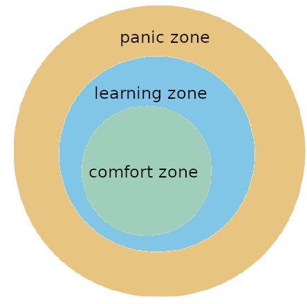

AGENDA#
Welcome
Set Up
Break
Connect
Instructional team#
The DS Team#
About me#
About me#
Thomas Zander#
Coach DS#
My background:#
PhD in Mechanical Engineering
Data Scientist for human motion capture
Why I joined the team:#
Helping and inspiring others with what I enjoy most is awesome
I like to mine valuable information from idle data
Ask me about:#
Cycling
Running
Book binding
Reading
Learning Journey#
What is Data Science?#
Learning Journey#

Key Milestones#
Chapter 0: Python, Unix, Git
Chapter 1: Exploratory Data Analysis (EDA) and Descriptive Statistics with Python
Chapter 2: The Machine Learning Framework
Chapter 3: More Machine Learning (NN/NLP/TS)
Chapter 4: Capstone Project
Timeline#
Tools and getting started (Week 1-4):
Work space, Python Programming, Pandas, Visualisation, Exploratory Data Analysis
→ 1st individual project
Machine learning (Week 4-9):
Supervised and Unsupervised Algorithms, Deep Learning
→ 2nd Project
Working in teams on your own (Week 9-12):
The Whole Data Science Life Cycle
→ Capstone Project
Learning Experience#
What you can achieve#
I. Översetter by Marcel
What you can achieve#
II. Apply or not to apply by Sina & Petra
What are you really learning?#
→ To be resourceful and figure things out!
Reading error messages
Web search skills
Finding outside resources
Having a process when you’re stuck
Expectations#
What you can expect#
→ We will give you all it takes to start working as a data scientist.
How to solve problems - becoming resourceful
3 reference projects
nf-network
What you can expect#
the more you know… the less you know
What you can expect#
You will learn a lot … also how to handle panic.
What we expect of you#
→ Don’t give up :D
The Hows…
Daily Reviews, Daily Standup
Portfolio Projects, Pair Programming
Rapid Assessment Tests (RAT)
Formalities (Attendance Video, Sick Leaves, Active Participation)
Please always include two of the coaches in your absence notifications!
Code of conduct#
→ Imagine you are already in your next job environment!
Be respectful
No assumptions
Help each other
Share resources (helpful blog posts, job-information, fun stuff)
Be patient - not everyone learns as fast as you
We are a team - You are only finished when everyone else is finished
Code of conduct - some more thoughts#
We are in a safe environment, where all of us want to learn
There are so many jobs outside; we won’t be competing at all
Built relationships here, they might be helpful for you any time in the future
You’ll never know who will help you find your next job
Daily review#
Each day one of you is responsible presenting:
What did you learn the day before
Discuss results and questions about the topic from the day before
Loading your notes of the daily review on Github
Each morning from 9-10am before class.
Pair programming#
Driver: writes code
Navigator: reviews code and gives “strategic” directions
Dos:
Be respectful
Talk to each other
Explain what you are doing
Think ahead and make suggestions
Don’ts:
Don’t be a bossy navigator
Don’t grab the drivers mouse/keypad
Switch Roles!
Support system#
We succeed together!
Slack: Our “virtual class room”
Need help? Just ask. StackOverflow (be resourceful) Your partner
1:1 Get additional coaching as needed.